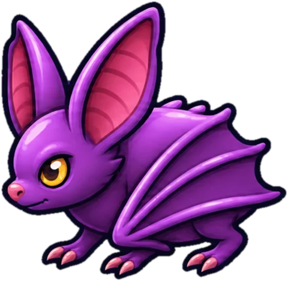

 Wind
WindTap a stage to read its story.
Noctlet is a small, plain purple bat that trots low to the ground with its wings half-open, ears pricked for every sound the Dark Forest makes. It is wide-eyed and alert in a way that says it is still cataloguing its world - each new sound gets a careful triangulation before the little bat decides whether it is a friend or a branch. When children entering the Forest speak their words bravely aloud, Noctlet perks up and hovers closer to listen.
Field note: Noctlet memorises the sound of every creature within a 100-metre radius within its first ten minutes in a new location.
Dark Forest. Noctlet and its family are found in the Dark Forest. See everyone who lives there.
Share a Bond Food that matches its types to become friends. Noctlet loves:
A Bond Food is not a trick. It joins your spirit with the Kimuro's spirit, and only when it chooses you.
Print the Kimuro adventure packs: mazes, cards, a board game and Bond Mark medals.
See the printable packs